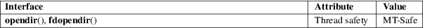

opendir, fdopendir − open a directory
Standard C library (libc, −lc)
#include
<sys/types.h>
#include <dirent.h>
DIR
*opendir(const char *name);
DIR *fdopendir(int fd);
Feature Test Macro Requirements for glibc (see feature_test_macros(7)):
fdopendir():
Since glibc 2.10:
_POSIX_C_SOURCE >= 200809L
Before glibc 2.10:
_GNU_SOURCE
The opendir() function opens a directory stream corresponding to the directory name, and returns a pointer to the directory stream. The stream is positioned at the first entry in the directory.
The fdopendir() function is like opendir(), but returns a directory stream for the directory referred to by the open file descriptor fd. After a successful call to fdopendir(), fd is used internally by the implementation, and should not otherwise be used by the application.
The opendir() and fdopendir() functions return a pointer to the directory stream. On error, NULL is returned, and errno is set to indicate the error.
|
EACCES |
Permission denied. | ||
|
EBADF |
fd is not a valid file descriptor opened for reading. | ||
|
EMFILE |
The per-process limit on the number of open file descriptors has been reached. | ||
|
ENFILE |
The system-wide limit on the total number of open files has been reached. | ||
|
ENOENT |
Directory does not exist, or name is an empty string. | ||
|
ENOMEM |
Insufficient memory to complete the operation. |
ENOTDIR
name is not a directory.
For an explanation of the terms used in this section, see attributes(7).

POSIX.1-2008.
opendir()
SVr4, 4.3BSD, POSIX.1-2001.
fdopendir()
POSIX.1-2008. glibc 2.4.
Filename entries can be read from a directory stream using readdir(3).
The underlying file descriptor of the directory stream can be obtained using dirfd(3).
The opendir() function sets the close-on-exec flag for the file descriptor underlying the DIR *. The fdopendir() function leaves the setting of the close-on-exec flag unchanged for the file descriptor, fd. POSIX.1-200x leaves it unspecified whether a successful call to fdopendir() will set the close-on-exec flag for the file descriptor, fd.
open(2), closedir(3), dirfd(3), readdir(3), rewinddir(3), scandir(3), seekdir(3), telldir(3)